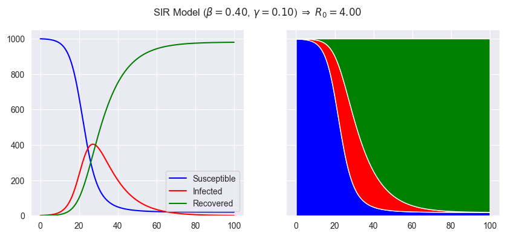

Our interest is agent based modelling of SIR type models. However, it is useful to understand the continuous version of SIR type models so we can compare it with the agent based models.
The SIR model is a simple model of the spread of a disease in a population.
The population of \(N\) individuals is divided into three compartments:
If we treat \(S\), \(I\), and \(R\) as continuous variables (they are number of people!) and make simplifying assumptions about individuals' behaviour we can derive the following system of differential equations:
$$ \begin{align} \frac{dS}{dt} &= - \beta S I / N \\ \frac{dI}{dt} &= \beta S I / N - \gamma I\\ \frac{dR}{dt} &= \gamma I \end{align} $$
The model has parameters:
You should have a look at the slide desk which covers a number of SIR variations and their implementation in python.
Since the continuous SIR model is represented by a system of first order differential equations we can solve it using scipy.integrate.solve_ivp.
First we define a function representing the right hand side of the differential equation system:
1 2 3 4 5 6 7 8 9 10 11 12 13 14 15 16 17 18 19 20 | |
solve_ivpThe function solve_ivp is newer/nicer alternative to odeint, and to use it,
you pass a function defining the ode,
the span of the independent variable,
initial conditions,
then the more important optional arguments are the list of parameter values, args, and
the points at which to calculate the solution, t_eval.
Function solve_ivp returns a lot of data in sol. We just want the independent value, t, and the dependent variable S,I, R stored in 2D array y.
1 2 3 4 5 | |
1 2 3 4 5 6 7 8 9 10 11 12 13 14 15 16 17 | |
This should generate the following representation of the SIR model:

This shows that the infection spreads quickly, with peak infection at about 30 days and then dies out. The infection dies out as the number of susceptibles decreases.
This is all nice and easy, but it is not very realistic. Using an agent based model we can model the spread of the disease where individuals interact with each other based on their relative location. And since location is now a factor, we can also measure the impact of social distancing measures.
Implement the SIRD model (see slide deck) using the continuous model. The SIRD model includes a fourth compartment, the number of people dead due to the disease.